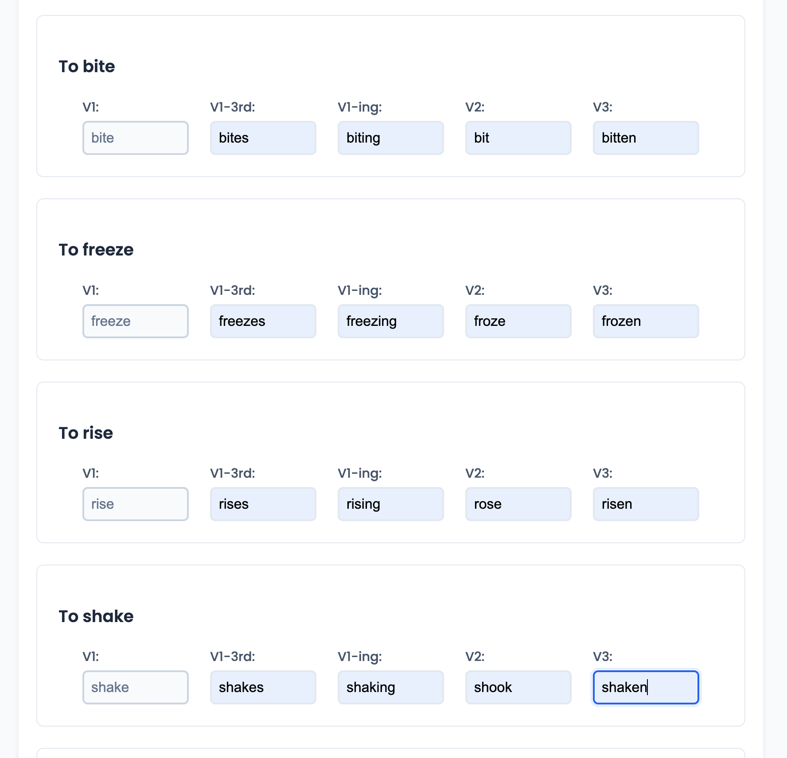
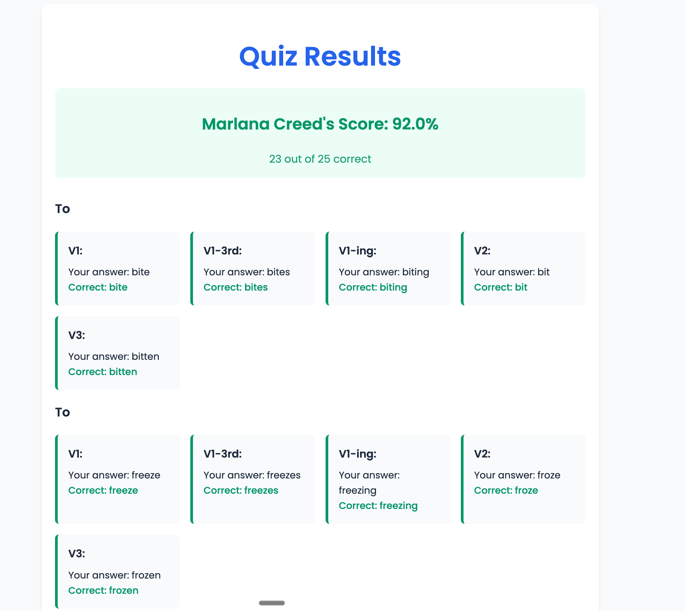

ESOL Learning Hub (LMS)
A full-stack Learning Management System serving interactive grammar guides and quizzes to adult learners.
The Challenge
Adult ESOL (English for Speakers of Other Languages) learners often struggle with static textbooks that disconnect explanation from practice. I needed a solution that would keep students in the "learning flow"—reading a concept and immediately testing it without losing context.
The Solution
I built a custom Learning Management System (LMS) centered around "Interactive Grammar Guides." Unlike standard blog posts, these guides are state-aware applications that adapt as the student reads.
1. The "Unlock" Mechanics (Interactive State)
I designed the guides to prevent cognitive overload. Exercises at the bottom of each section are initially locked or hidden. They only reveal themselves when the student actively engages with the section, creating a rewarding "micro-loop" of learning.

Figure 1: The 'Quick Check' exercises appear dynamically, allowing students to apply concepts immediately next to the explanation.
2. Deep Assessment (Mini Quizzes)
To ensure long-term retention, every comprehensive guide ends with a multi-part "Mini Quiz." This isn't just a simple form; it's a multi-step component that handles various question types (multiple choice, sentence reordering) and provides immediate validation.

Figure 2: The final assessment module, aggregating scores to track student mastery.
3. Scalable Architecture
What started as a single tool has grown into a library of over 50+ interactive activities. The proactive architecture allows for rapid content expansion without rewriting the core engagement logic.

Figure 3: The Dashboard view showing the breadth of accessible content—Grammar, Vocabulary, and Quizzes.
Methodology: The "Modern Builder" Approach
This project demonstrates High-Agency Technical Implementation.
Rapid Prototyping
I utilized AI-assisted development workflows to move from "Idea" to "Deployed Feature" in hours, not weeks.
Product-First Code
My focus was on user outcomes (student retention) rather than infrastructure optimization, allowing me to build a complex state engine without a large team.
Full Ownership
From database schema design to CSS animations, I orchestrated the entire stack to serve the pedagogical goals.
Technical Highlights
- State Management: Complex handling of user progress through multi-section guides.
- SPA Architecture: Zero-latency transitions between study and quiz modes.
- Accessibility: High-contrast design and clear focus states for diverse learner needs.